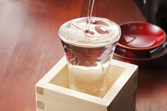
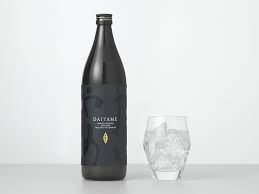
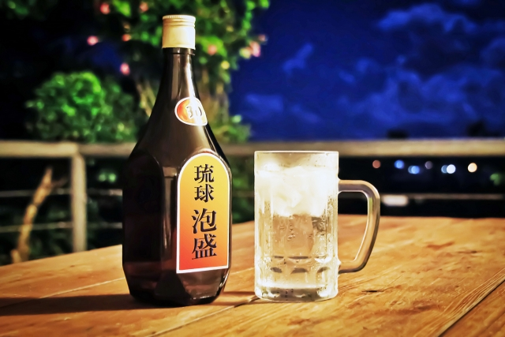

お酒の歴史
ビールの歴史
ビールの歴史は紀元前まで遡ります。ダミーダミーダミーダミーダミーダミーダミーダミーダミーダミーダミーダミーダミーダミーダミーダミーダミーダミーダミーダミーダミーダミーダミーダミーダミーダミーダミーダミーダミーダミーダミーダミーダミーダミーダミーダミーダミーダミーダミーダミーダミーダミーダミーダミーダミーダミーダミーダミーダミーダミーダミーダミーダミーダミーダミーダミーダミーダミーダミーダミーダミーダミーダミー。このことからビールが誕生しました。
日本酒の歴史
日本酒の歴史は紀元前まで遡ります。ダミーダミーダミーダミーダミーダミーダミーダミーダミーダミーダミーダミーダミーダミーダミーダミーダミーダミーダミーダミーダミーダミーダミーダミーダミーダミーダミーダミーダミーダミーダミーダミーダミーダミーダミーダミーダミーダミーダミーダミーダミーダミーダミーダミーダミーダミーダミーダミーダミーダミーダミーダミーダミーダミーダミーダミーダミーダミーダミーダミーダミーダミーダミー。このことから日本酒が誕生しました。
焼酎の歴史
焼酎の歴史は紀元前まで遡ります。ダミーダミーダミーダミーダミーダミーダミーダミーダミーダミーダミーダミーダミーダミーダミーダミーダミーダミーダミーダミーダミーダミーダミーダミーダミーダミーダミーダミーダミーダミーダミーダミーダミーダミーダミーダミーダミーダミーダミーダミーダミーダミーダミーダミーダミーダミーダミーダミーダミーダミーダミーダミーダミーダミーダミーダミーダミーダミーダミーダミーダミーダミーダミー。このことから焼酎が誕生しました。
泡盛の歴史
泡盛の歴史は紀元前まで遡ります。ダミーダミーダミーダミーダミーダミーダミーダミーダミーダミーダミーダミーダミーダミーダミーダミーダミーダミーダミーダミーダミーダミーダミーダミーダミーダミーダミーダミーダミーダミーダミーダミーダミーダミーダミーダミーダミーダミーダミーダミーダミーダミーダミーダミーダミーダミーダミーダミーダミーダミーダミーダミーダミーダミーダミーダミーダミーダミーダミーダミーダミーダミーダミー。このことから泡盛が誕生しました。